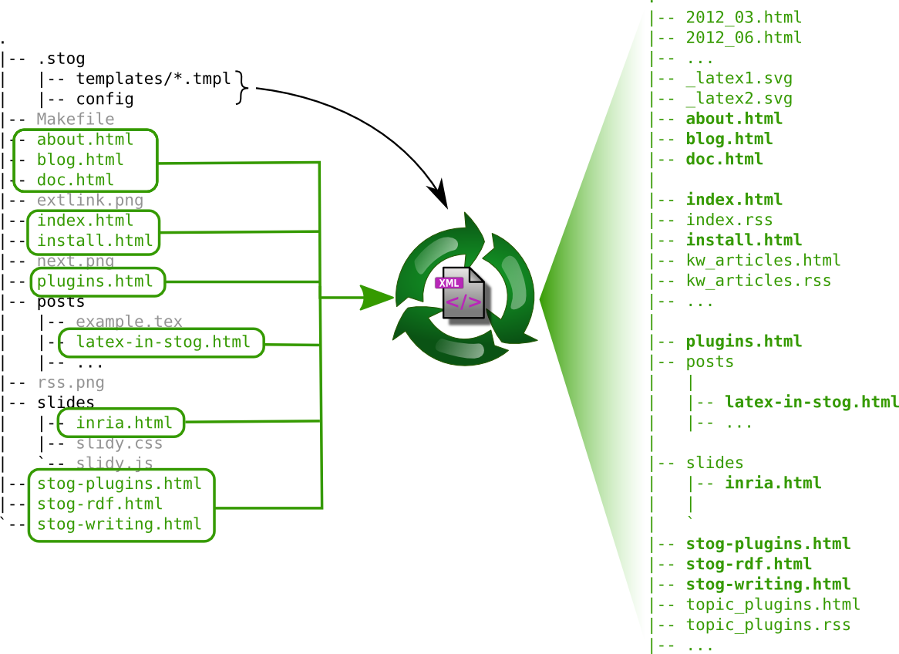

<slideshow title="Stog"
subtitle="A static web (site|blog|documentation|article|course|...) generator"
date="2013/03/25"
author="Maxence Guesdon"
affiliation="INRIA Saclay-Île-de-France"
duration="30"
with-contents="true"
>
<slide title="" id="" class="">
<div class="slide &lt;class/&gt;" id="&lt;id/&gt;">
<h1><title/></h1>
<contents/>
</div>
</slide>
<contents>
<slide title="What I wanted">
<p>
bla bla bla
</p>
</slide>

<slide title="Overview (1)">
<div class="center">
 <object data="how_it_works.svg" type="image/svg+xml"
  width="90%" title="Handling of element files">
   
</object>
</div>
</slide>

<slide title="Templates">

</slide>

<slide title="Rewrite rules">

</slide>

<slide title="A powerful rule: &lt;icode&gt;&amp;lt;eval-ocaml&amp;gt;&lt;/icode&gt;">

</slide>

<slide title="Templates + rewrite rules = not enough!">

</slide>

<slide title="Levels of rewrite rules">

</slide>

<slide title="Functions">

</slide>

<slide title="Plugins">

</slide>

<slide title="Existing plugins">

</slide>

<slide title="Modules">

</slide>

</contents>
</slideshow>